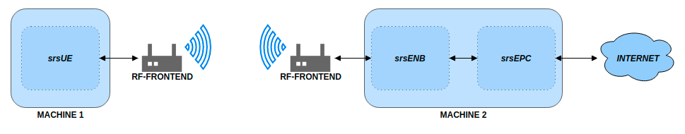

LTE 设置指南
基准硬件要求
{kind=link}

使用 USRP 进行基本 srsRAN 4G LTE 设置
整个系统需要 2 个 RF 前端和 2 台带有基于 Linux 操作系统的 PC。 这可以细分如下：
网元 |
RF-前端 |
基于 Linux 的 PC |
|---|---|---|
srsUE |
X |
X |
血清ENB |
X |
X |
超级EPC |
X |
UE 将在连接了 RF 前端的机器 1 上实例化。 eNB 将在连接了 RF 前端的机器 2 上运行 与 UE 进行空中通信。 EPC 将在与 eNB 相同的机器上实例化。请参阅下图，其中概述了 整体系统架构。
运行 4G 端到端系统
以下执行说明适用于拥有相应 RF 硬件的用户 来模拟网络。如果您想在没有 RF 硬件的情况下测试 srsRAN 4G 的使用，请 看到 ZeroMQ 应用笔记.
srsUE、srsENB 和 srsEPC 应用程序包括示例配置文件 应该复制（手动或使用便利脚本）并修改， 如果需要，满足系统配置。 在许多系统上，它们应该开箱即用。
默认情况下，所有应用程序都会在用户的家中搜索配置文件 启动时的目录（~/.srs）。
请注意，您必须以 root 权限执行应用程序才能启用 实时线程优先级并允许创建虚拟网络接口。
srsENB 和 srsEPC 可以作为内置网络配置在同一台计算机上运行。 srsUE 需要在单独的机器上运行。
如果您已经使用安装了软件套件 `须藤 使 安装`和
已使用安装示例配置文件 `须藤 srsRAN_4G_install_configs.sh`,
您可以使用默认参数启动所有应用程序。
超级EPC
在机器 1 上，运行 srsEPC，如下所示：
须藤 SRSEPC
使用默认配置，这将创建一个虚拟网络接口 名为“srs_spgw_sgi”，位于 IP 172.16.0.1 的计算机 1 上。所有连接的UE 将在该网络中分配一个 IP。
血清ENB
同样在计算机 1 上，但在另一个控制台中，运行 srsENB，如下所示：
须藤 斯尔森布
srsUE
在机器 2 上，运行 srsUE，如下所示：
须藤 斯苏埃
使用默认配置，这将创建一个虚拟网络接口 机器 2 上名为“tun_srsue”，IP 位于网络 172.16.0.x 中。 假设 UE 已分配 IP 172.16.0.2，您现在可以交换 通过 LTE 链路与计算机 1 进行 IP 流量。例如，运行 ping 到 默认 SGi IP 地址：
平 172.16.0.1
示例
如果 srsRAN 4G 是从源代码构建的，则可以在以下文件夹中找到预配置的示例用例： `./srsRAN_4G/build/lib/examples`
以下列表概述了所涵盖的一些用例：
小区搜索
NB-IoT 小区搜索
能够解码 PDSCH 数据包的 UE
能够创建和传输 PDSCH 数据包的 eNB
请注意，上述示例需要 RF 硬件才能运行。这些例子也支持使用 的 图形用户界面 用于实时绘制数据。